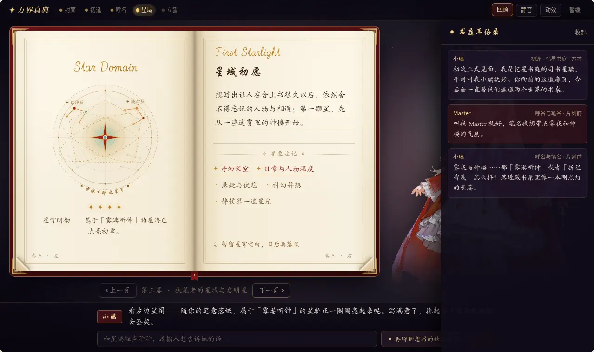
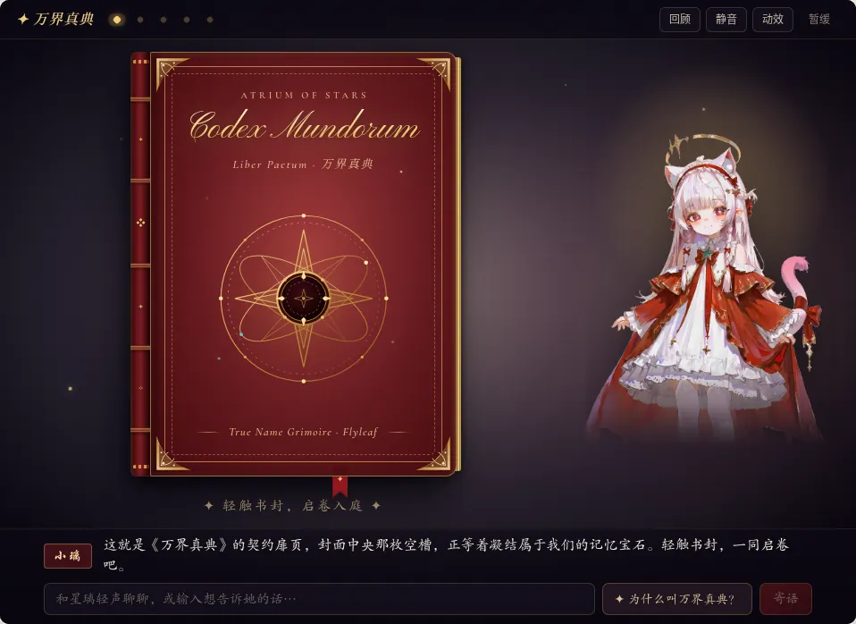
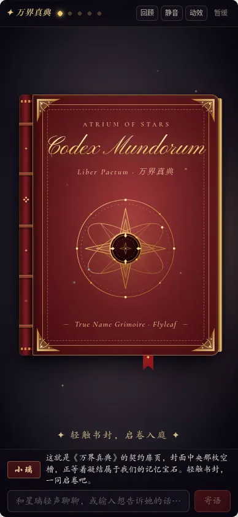
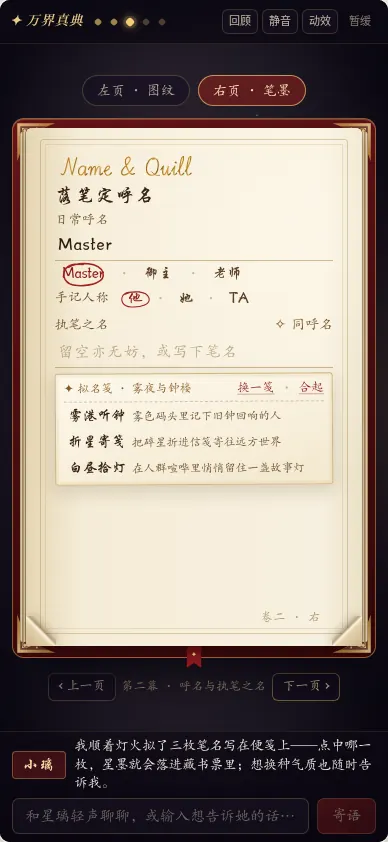
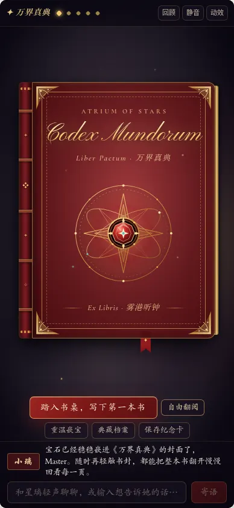
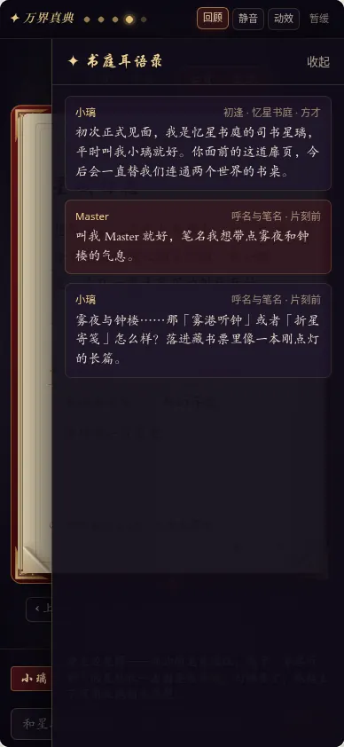

第 4 轮：星璃「真名契约仪式」流畅度、魔法具象化与终幕精修评审
第 4 轮 7 项流畅度、魔法具象化与终幕精修后的整套设计稿，是否正式定稿？
推荐 A 正式定稿：第 3 轮提出的 7 项升级已逐条落地，桌面 / 960 / 390 三档 23 组静态截图零报错、零溢出，全流程含点击记忆宝石自动合书嵌印与嵌宝后重开自由翻阅均实机验证通过，可锁定本版为正式 Spec 与全身 7 差分立绘生图基线。

A 正式定稿，锁定基线
整体构图、扩宽后的星璃立绘空间、三法阵器物具象化、移除鉴证录与宝石自动合书嵌宝体验均达到预期，锁定本版进入正式 Spec 与 7 差分立绘生图阶段。
B 方向已对，再微调局部细节
整体结构与交互方向认可，但希望对个别版式、法阵间距、立绘尺度或文案再做小幅精修（请在备注说明具体位置）。
C 仍有较大改动方向
需要对某一幕的视觉构图、三法阵交互或终幕流程做较大重做（请在备注说明期望方案）。
真 3D 拱起翻页、逐笔英文手写、三法阵器物具象化与记忆宝石自动嵌印的实机动效体验如何？
推荐 A 认可实机动效与魔法具象化演绎：请在 Component Lab 试玩 interactive 场景，重点体感翻封面/3D 拱起翻页流畅度、每幕差异化入场叙事、英文逐笔金星笔尖轨迹、书页三法阵器物交互，以及点击宝石自动合书嵌宝与重开自由翻阅。
| 动效与魔法演绎项 | 第 4 轮实机实现与表现 | Lab 试玩触发方式 |
|---|---|---|
| 根治翻封面/翻页卡顿 + 真 3D 拱起翻页 | 重构为 3 段嵌套 preserve-3d 铰接书页（applyTurnDom 直接写 GPU 合成层变换，静止书本保持 transform-style: flat 避免全帧光栅重排），翻页时纸面真实拱折并带书脊动态阴影 |
interactive 场景点击封面启卷，再拖拽书角或点「下一页 / 上一页」连续来回翻页 |
| 英文真正逐笔书写 + 每幕差异化小故事 | CalligraphyStrokeText.vue 与 calligraphy-paths.ts 改用真实多段贝塞尔路径 stroke-dashoffset 逐笔绘制并附金星光笔尖追踪；第 1–3 幕分别编排独立开场节拍（点灯落印 / 藏书票显笔 / 星域逐星点亮） |
翻入第 1、2、3 幕等待空白纸面依次铺陈，观察各幕独特入场节奏与英文笔尖轨迹 |
| 书页三法阵具象变出器物 | 第 2 幕保留并强化藏书票星羽笔具象；第 4 幕移除底部火漆操作栏，改为书页左右翼三座魔法阵（ArcaneConjurationStage.vue）分别具象变出星羽笔、绯红暖蜡、黄铜星印，支持轻点或拖拽完成滴蜡与落印 |
进入第 4 幕点左侧「星羽笔」重绘或切换签名，点「绯红暖蜡」倾倒凝泊，再点/拖右侧「黄铜星印」落印 |
| 升级成契光效 + 点击宝石自动合书嵌印 | 取消独立「契约鉴证录」页；落印后在契约书原地触发圣光冲击波、多层旋转符文环与金粉星屑，随即在火漆处凝结浮现记忆宝石；直接轻触宝石自动合上《万界真典》并将宝石嵌进封面空槽 | 第 4 幕落印后观赏魔法爆发，直接点击契约书上悬浮发光的红色记忆宝石 |
| 嵌宝后重开封面与全书自由翻阅 | 宝石嵌印完成后不锁死流程：轻触封面或点击下方「自由翻阅」可再次平滑翻开书本，在第 1–4 幕间随意前后翻页、重温笔迹与契约，亦可随时合回封面或重温嵌宝动画 | 终幕 closed-sealed 状态下直接点封面或「自由翻阅」，再按页角/底栏自由来回翻页 |
A 认可流畅度、逐笔手写与魔法具象化动效
翻封面与 3D 拱起翻页流畅度、每幕差异化节奏、逐笔英文书写、三法阵器物交互、成契光效与点击宝石自动嵌印均满意。
B 喜欢这套魔法演绎，微调节奏或光效强度
认可整体动效方向，希望调整翻页/逐笔书写时长或微调成契光效、粒子与呼吸光强度（请在备注写明方向）。
C 调整三法阵器物或宝石嵌印交互细节
对三法阵器物摆位、手势反馈、光效细节或嵌宝后重开自由翻阅流程有具体修改建议（请在备注写明）。
多视口实测复核（960×700 与 390×844，不用答）
注：三视口 23 组 lab:shot 截图均零报错、零溢出。其中 960×700 窄桌面档为了兼顾右侧星璃扩宽空间与中央羊皮纸字号清晰度，第 4 幕书页左右翼法阵外环紧贴羊皮纸边缘（不影响文字与点击）；1280×760 与 390×844 均留白充裕。





已按第 3 轮 7 项要求逐条落地（不用答）
| # | 第 3 轮开发者要求 | 第 4 轮已落改动 |
|---|---|---|
| 1 | 根治翻封面/翻页卡顿 + 真 3D 翻页 + 嵌宝后自由翻阅 | 以 applyTurnDom 直接驱动 GPU 3 段嵌套 preserve-3d 铰接书页与静态书本 transform-style: flat 隔离，消除翻封面与翻页重排卡顿并实现纸页真实 3D 拱起翻折；终幕 closed-sealed 后开放直接点击封面与「自由翻阅」重开至第 1 幕并在第 1–4 幕间自由前后翻阅。 |
| 2 | 扩大右侧星璃立绘空间 | 放宽 .codex-theater-layout 舞台总宽至 1380px 并将 .lyra-companion 扩增至 clamp(308px, 32.5cqi, 442px)，为书本右侧星璃留出更舒展的体量与呼吸空间。 |
| 3 | 真正一笔一画英文手写 + 每幕差异化“舞台小故事”演出 | 新建 calligraphy-paths.ts 并重写 CalligraphyStrokeText.vue，以真实多段 SVG 贝塞尔路径 stroke-dashoffset 逐笔书写并附金星光笔尖追踪（封面保持烫金浮雕）；为第 1–3 幕编排差异化入场叙事节拍（story-beat-act1 / act2 / act3），告别模板化同顺序淡入。 |
| 4 | 魔法书具象变出器物（第 4 幕三法阵变出羽毛笔、红蜡、印章） | 延续第 2 幕藏书票星羽笔具象思路；第 4 幕彻底移除契约纸底部火漆控件栏，新增 ArcaneConjurationStage.vue 在书页左右两翼展开三座魔法阵，分别具象变出星羽笔（左侧上，触发提笔覆写/切签名）、绯红暖蜡（左侧下，壹步倾倒成泊）与黄铜星印（右侧，贰步按压落印）。 |
| 5 | 移除独立「契约鉴证录」页并强化成契魔法光效 | 全面移除 act5（顶栏步骤条精简为「封面 · 初逢 · 呼名 · 星域 · 立誓」）；落印成契时在契约书原地爆发多层旋转星轨符文、金粉星屑散射与柔和圣光脉冲，视觉张力大幅升级。 |
| 6 | 删除契约页底部的「合上《万界真典》，嵌印宝石」操作栏 | 移除第 4 幕下方冗长操作按钮栏，腾出完整垂直舞台空间，仅在书外页码栏保留极简翻页引导提示。 |
| 7 | 点击记忆宝石自动合书嵌宝 | 成契光效完成后，于契约书火漆印位正中凝结浮现发光可点击的记忆宝石（data-ceremony-action="click-memory-gem"）；点击宝石直接自动触发合书动画并将宝石沿星轨精准嵌印进封面中央空槽。 |
仍待正式落地阶段补齐的素材与平台依赖（不用答）
| 类别 | 待补项 | 当前草稿状态 | 正式落地依赖 |
|---|---|---|---|
| 立绘差分 | 按 D2 生成星璃 7 张全身透明立绘差分（舞台按场景取上半身/全身构图） | 已使用洁净抠底母版立绘 lyra-master-cutout.webp（无硬边） |
本轮定稿后单独立项生图 |
| 中文字体 | 随包离线分发的中文字体手写子集（英文古典花体 Pinyon Script / Great Vibes / Cormorant Garamond 已完成离线打包） |
本机楷体手写回退栈（LXGW WenKai / STKaiti / Kaiti SC） |
正式插件引入开源可商用中文字体子集打包 |
| 声景音频 | 真实 Foley 纸页、羽笔、滴蜡、风铃与宝石嵌合音效（可选） | Web Audio API 程序合成克制音效，默认静音可开 | 可沿用零体积合成音或替换为实录短音频 |
| 平台与中间人 | nbook.bots、bot://memory/、ToolContext.ask() 与隐身 ceremony.* 舞台工具 |
草稿纯内存态 + 本地剧本回执 + 前端导出纪念卡 PNG | 依赖 w00043（t06 主对话 / t09 Bot 记忆）落地后另起 Spec 与实现计划 |
已定（2026-11-18 设计定稿 + R1 D1–D5 + R2 D6–D7 + R3 18 项打磨基线）
- 整体基调（D1）：暗夜星案、赤金英文花体精装书、右侧大空间星璃陪伴与底部极轻 48px 字幕条；全书手写体无 TTS，台词同步星墨浮现。
- 立绘规格（D2）：后续 7 差分按全身立绘生成，舞台摆放时按场景取上半身或全身呈现。
- 签字与三法阵封缄（D3 + R2 #16 + R3 #4）：第 4 幕默认花体
Master落款（支持直接提笔手写、导入墨迹或切换朱砂藏书印）；书页左右翼三法阵分别具象变出星羽笔、绯红暖蜡与黄铜星印，完成先滴蜡后按压的二段封缄。 - V1 主持范围（D4）：V1 仅开放星璃自主持，不启用 V2「真典司仪」宣礼条，代码预留接口扩展位。
- 响应式与回顾（D5 + D7）：960×700 / 390×844 窄屏单页切换与右侧「书庭耳语录」对话回顾抽屉布局。
- 第 4 幕版式与终幕收束（D6 + R3 #5–#7）：书页间夹入纵向羊皮纸契约书并取消独立鉴证录页；成契后原地绽放魔法光效并凝结可点击记忆宝石，轻触宝石自动合书嵌印，嵌宝后支持随时重开自由翻阅全书。
- 平台归属与即时生效：产物归属
bot://memory/，仪式结束后主对话完整保留仪式上下文当轮自然改口，下次 compaction 自动刷新常驻称呼；二次打开分流至典藏契约书。